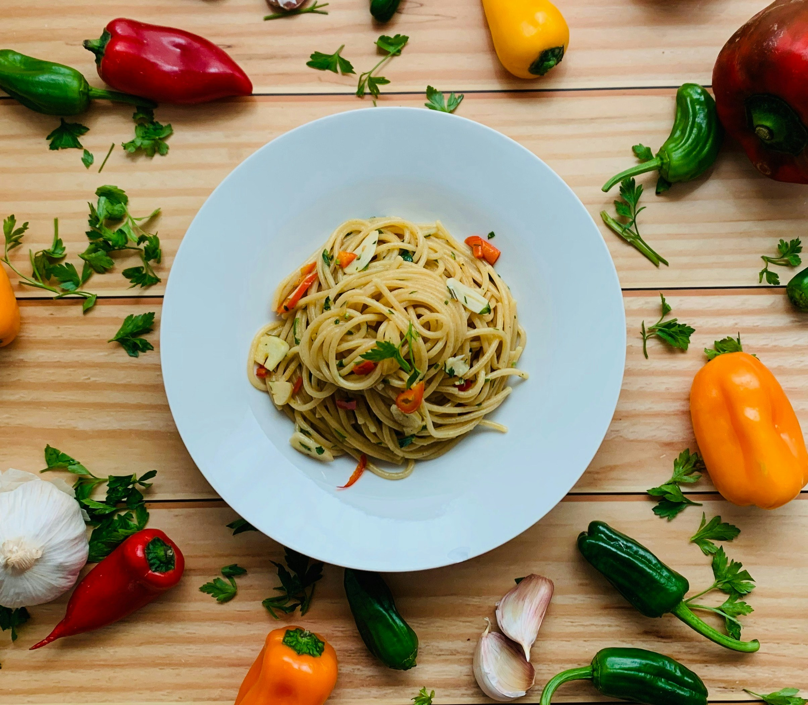

Spaghetti Aglio Olio (Non-Veg) Recipe
Home

Description
A popular Italian Spaghetti Aglio Olio, features a milder taste for moments of restfulness. Customised to include chicken for an extra protein intake
Ingredients
- Store-bought spaghetti (for the Italians, feel free to make your own spaghetti at home, but this could be very time consuming for the untrained)
- Olive oil
- Garlic
- Onions
- 1 piece chicken breast
- Salt and pepper
- Chopped parsley
- Oregano/pasta seasoning
Steps
- In a pot, add roughly 2 quarts for 230g of spaghetti and 4tbsp of salt(this is enough for 1 large meal or two average-sized meals, scale up or down if necessary!)
- Start a timer for 10 minutes, this is rougly enough time for the spaghetti to reach al-dente
- While the timer is going, in a wok add 2 cups of olive oil and let it simmer for around 20-30 seconds
- Add 2 chopped garlic cloves as well as about 1/2 of a diced onion. Don't skimp on these, most of the flavour comes from it!
- Let this cook for about 2 minutes. Meanwhile, start cutting up the chicken breast into cubes
- After the 2 minutes, add the chicken and toss it around for 3-5 minutes (depending on quantity and piece size)
- Add 1 and a half laddles of pasta water and all of the spaghetti to the wok for mixing
- Add the seasonings, plate and eat!